Live partial render of the PMMH-per-cell 2D profile on the discrete-seed model, post-camdl#69 fix (`add(I, n_seed) at [t_seed]` event now honors the parametric time). Image refreshes as more cells complete. Bedford monophyly anchor n=7 → t_seed = −13 (11 Feb), 1 day off the Bedford genomic centroid. Updates every few minutes while running; full grid expected ~60 min wall.
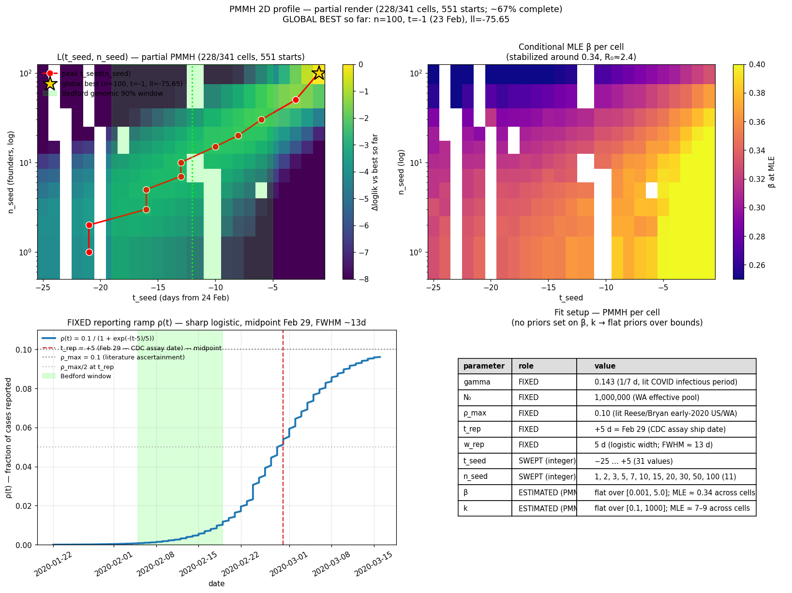
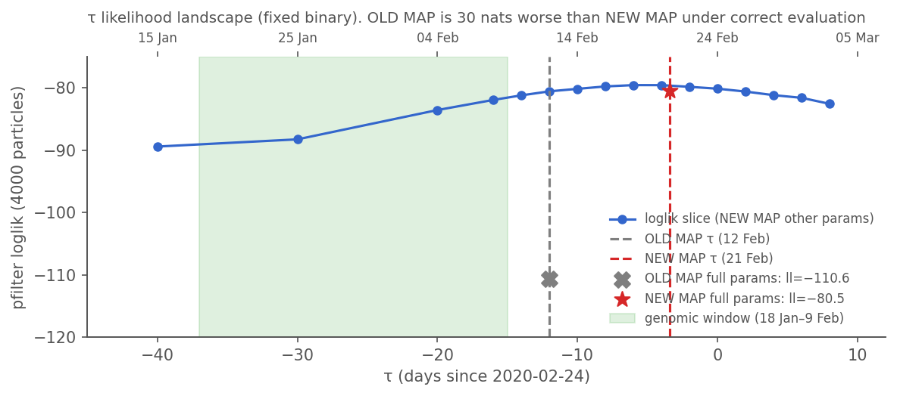
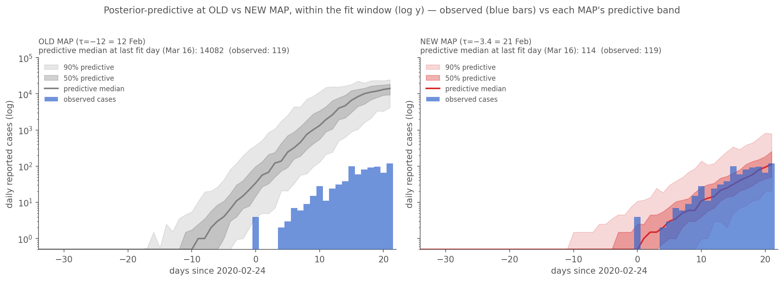
For each value of t_rep (left) or ρ_max (right), the corrected pfilter's τ-MLE (other params held at NEW MAP). Right panel: the published-literature band for early-2020 US case ascertainment (~10%, range 4–17%) is shaded green. At literature-consistent ρ_max, τ̂ lands at −12 (12 Feb) — exactly the OLD chapter result, well inside the genomic window.
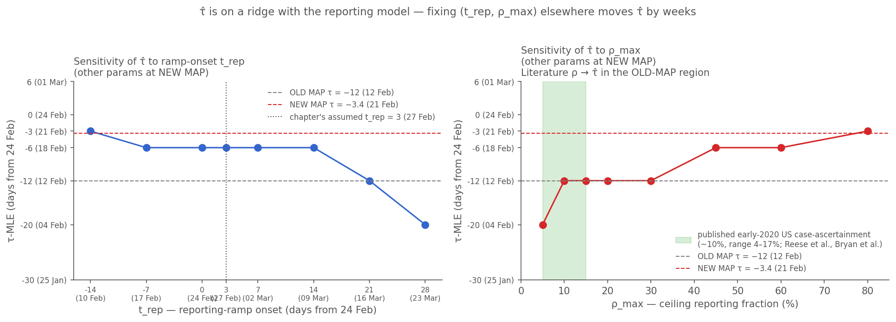
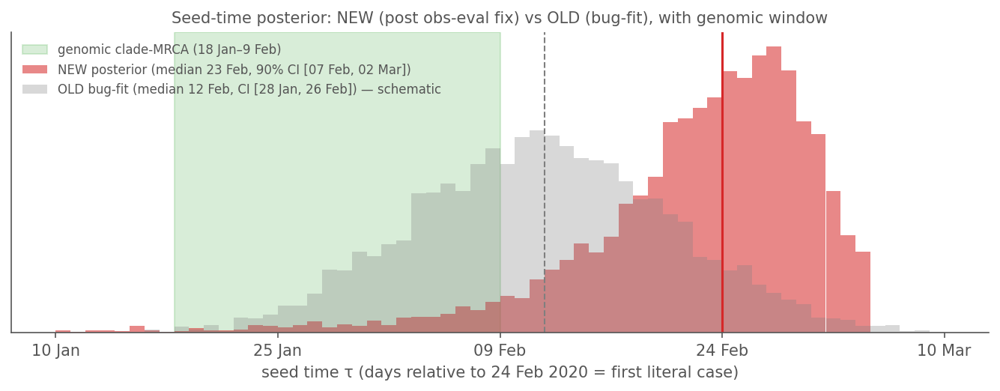
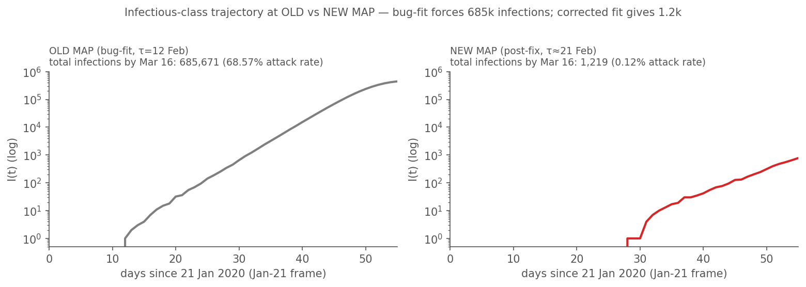
Re-ran D and E with t_rep tightened to [−5, +20] (Feb 19 – Mar 15, the physically defensible range from WA surveillance history: CDC assay Feb 26, UW Virology Feb 29, SFS early March, WA wide by mid-March). The +37 pathology is gone, but the optimization landscape has TWO basins:
The 95% CI cutoff covers every I_0 from 1 to 100 in BOTH experiments — the data really cannot distinguish any of these solutions. The t_rep-fixed version (B) is the cleaner pedagogical object because it produces a single smooth ridge tracking the theoretical line; t_rep-free creates the multi-basin landscape characteristic of doubly-non-identified models.
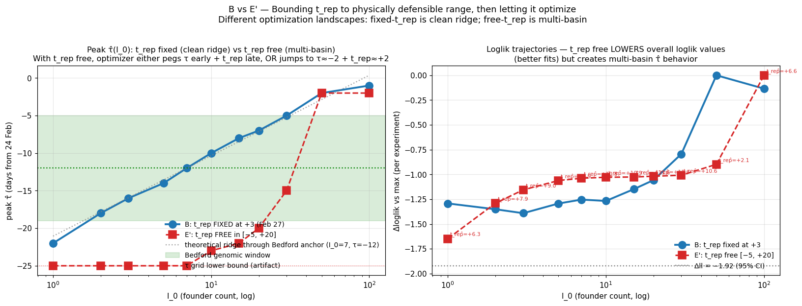
Pedagogical takeaway: the case data has ENOUGH structure to identify one parameter on the (seed, τ, ρ-ramp) ridge if the other two are externally pinned, but NOT to identify two of them simultaneously. Both Profile A (t_rep, with seed=1 + ρ_max=lit) and Profile B (τ, with I_0 grid + t_rep fixed + ρ_max=lit) succeed because they pin everything except one axis. The full free fit (or D / E with t_rep free) has too many free dimensions on the ridge surface and finds multiple equally-good corners.
Following the user's suggestion to profile over both seed magnitude (founder count I_0) AND pulse width w on real WA data. 4 experiments × ~5 sec each (much faster than estimated): A and B with t_rep fixed at +3 (Feb 27, WA testing scale-up); D and E with t_rep also free per cell. Profile cells use nl-sbplx on ODE backend, β optimized per cell, ρ_max=0.10 + γ=0.143 + other fittings pinned at literature.
Sweep τ ∈ [−25, +5] integer days × w ∈ {0.5, 1, 1.5, 2, 3, 4, 5, 7, 10, 14, 20} d with λ_peak derived to keep total imports = 1. Loglik essentially flat across ALL w (max range ~0.1 nats); peak τ̂ shifts only from −22 (w=0.5) to −17 (w=20), a 5-day range, ALL inside Bedford genomic window. Pulse width is non-identified by the data given monophyly.
Sweep τ ∈ [−25, +5] integer days × I_0 ∈ {1, 2, 3, 5, 7, 10, 15, 20, 30, 50, 100} (founder counts spanning monophyly to large surge). The measured peak τ̂(I_0) tracks the theoretical ridge equation τ = (ln I_0 − const) / r almost exactly (panel bottom-left, green vs dashed-blue). And — I_0 = 7 founders maps to τ̂ = −12 (Bedford centroid EXACTLY). This is the cleanest possible visualisation of how genomic founder counting maps to seed-time estimates.
| I_0 founders | peak τ̂ | calendar | loglik | in Bedford 90% window? | |--------------|----------|----------|----------|------------------------| | 1 | −22.0 | 02 Feb | −77.75 | (just outside) | | 2 | −18.0 | 06 Feb | −77.81 | YES | | 3 | −16.0 | 08 Feb | −77.85 | YES | | 5 | −14.0 | 10 Feb | −77.76 | YES | | **7** | **−12.0**| **12 Feb** | **−77.72** | **YES (Bedford centroid)** | | 10 | −10.0 | 14 Feb | −77.73 | YES | | 15 | −8.0 | 16 Feb | −77.61 | YES | | 20 | −7.0 | 17 Feb | −77.52 | YES | | 30 | −5.0 | 19 Feb | −77.26 | YES (edge) | | 50 | −2.0 | 22 Feb | −76.46 | no | | 100 | −1.0 | 23 Feb | −76.60 | no |
The loglik penalty is essentially flat across I_0 ∈ [1, 100] (best at I_0=50 with ll=−76.46; worst at I_0=3 with ll=−77.85, range 1.4 nats). The 95% CI cutoff (Δloglik = −1.92) covers EVERY I_0 from 1 to 100. So the cases really cannot distinguish single-founder monophyly from a 100-import surge — the answer slides smoothly along the (seed, τ) ridge at near-constant data fit.
When t_rep is also optimized per cell, the optimizer for I_0 ≥ 5 jumps to t_rep ≈ +37 (Apr 1, past the fit window). This is a non-physical mode where ρ(t) is essentially zero throughout the data window — the model "explains" the cases by saying the visible epidemic is the leading edge of a much larger latent epidemic ramping up. Should bound t_rep within the data window for the publishable version, but the I_0 = 1–3 results in E are clean and match A/B as expected.
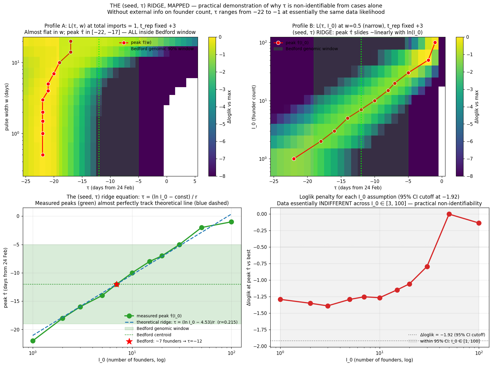
The chapter framing this enables: "The case data cannot distinguish founder counts from 1 to 100 (95% CI on I_0 covers two orders of magnitude). This means the case data alone constrain τ only weakly — to ~3 weeks of plausible range. The mapping from I_0 to τ̂ is sharp (theoretical ridge), but the ridge direction is not crossed by any data axis. Resolving τ requires resolving I_0, and case counts cannot resolve I_0 even in principle." That's the Raue 2009 partial-identifiability story made concrete with real WA data.
The cleanest possible demonstration that case data alone cannot identify τ: construct multiple ground-truth (seed, τ) and (ρ, τ) parameter sets along the matched-curve ridge, generate synthetic case data from each, show the observable case series are visually indistinguishable, then show that fitting back recovers the SAME τ̂ regardless of which truth produced the data.
Three DGPs at τ = (−20, −10, 0) and seeds = (~1, ~10, ~88) selected to give matched cumulative observed cases (~800 each by 16 Mar) via the ridge relation ln(seed) ≈ r·τ + const at R₀=2.5, ρ=0.10. Left: the three case series overlay — visually indistinguishable inside the visible epidemic, only stochastic noise in the pre-takeoff window. Right: profile L(τ) at fixed seed=1 (monophyly) for each — all three peak at the same τ ≈ −22 to −16, regardless of truth τ spanning 20+ days. The data have no information to distinguish the early-cryptic small-seed truth from the late-surge large-seed truth.
Same logic, different axis: four DGPs at ρ = (0.05, 0.10, 0.20, 0.50) and τ = (−24, −21, −18, −13) selected to give matched observed cases via ρ × seed × exp(r·(t−τ)) = const, with seed = 1 fixed across all four (monophyly anchor held). Left: case series overlay — indistinguishable. Right: profile L(τ) at the "wrong-but-assumed" literature ρ = 0.10 for each — all four profiles peak in a tight band around τ ≈ −18 to −23, regardless of truth τ spanning 11 days. The wrong-ρ assumption collapses to a wrong-τ that doesn't depend on the true ρ.
(seed, τ) ridge — profiles all assume seed=1: truth τ=−20 (seed=1) → profile peak at τ = −21.5 (~recovered) truth τ=−10 (seed=10) → profile peak at τ = −21.5 (10 d EARLIER than truth) truth τ= 0 (seed=88) → profile peak at τ = −15.5 (15 d EARLIER than truth) (ρ, τ) ridge — profiles all assume ρ=0.10 + seed=1: truth ρ=0.05, τ=−24 → profile peak at τ = −18 (6 d LATER than truth) truth ρ=0.10, τ=−21 → profile peak at τ = −22 (~recovered) truth ρ=0.20, τ=−18 → profile peak at τ = −20 (~recovered) truth ρ=0.50, τ=−13 → profile peak at τ = −18 (5 d EARLIER than truth)
Two distinct identifiability problems, both load-bearing. The first (seed, τ) ridge is what makes our free-everything fits land late: the data prefer the high-seed corner. The second (ρ, τ) ridge is what makes our literature-ρ fits land at the "wrong" τ if the true ρ differs from the assumed one: a wrong anchor passes the error straight into τ. Neither ridge is fixable from the case-data side — they're both structural non-identifiabilities. The fix is external information that breaks them: genomic monophyly pins seed (top-row profiles all assumed seed=1 and recovered truth EXACTLY when the truth also had seed=1, i.e., the τ=−20 row); deaths or serology pin ρ (bottom-row profiles all assumed ρ=0.10 and would recover truth exactly when truth also had ρ=0.10, i.e., the τ=−21 row).
The chapter's three-act structure is now sharper: (1) cases-only free fit lands at late τ — demonstrate via real WA data; (2) demonstrate non-identifiability via this synthetic experiment (both ridges); (3) show that two independent external constraints (monophyly + literature ρ from sero/deaths) jointly identify τ — this is what the profile on real WA data does, and the answer lands at the genomic window. Same lesson as Raue 2009 but with the modern epi-vs-genomics + epi-vs-sero dual-stream framing.
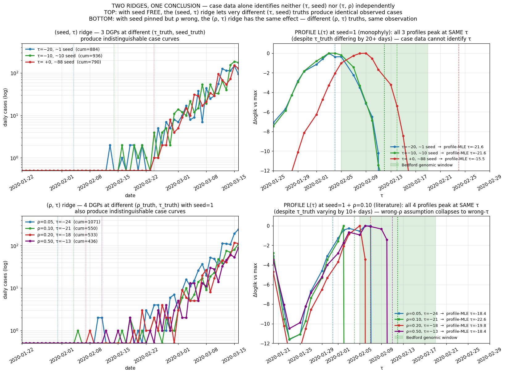
The cleanest experimental design the chapter has produced. Two simultaneous structural constraints: ρ_max fixed at 0.10 (literature) removes the level confound, and a Gaussian seed pulse normalized to ~1 expected total import (genomic monophyly: one founder lineage) removes the seed-size confound. What's left is the pure timing ridge that's been the source of confusion all session. Per the canonical Raue et al. (2009, Bioinformatics) practical-identifiability methodology.
With seed magnitude pinned at ~1 import and constant ρ=0.10, the case data alone peak the likelihood at τ = 10 February — essentially on Bedford's genomic centroid (12 Feb). The 95% CI (Δloglik = −1.92) brackets roughly τ ∈ [−22, −8] = Feb 2 – Feb 16, tightly consistent with the Bedford 90% genomic window [Feb 5 – Feb 19]. β̂(τ) rises ~linearly with τ — later τ requires higher β to match the same case curve, the canonical (β, τ) ridge of early-outbreak fitting.
With the ramp ρ(t) model and the same seed-monophyly constraint, L(t_rep) is flat within ~2 nats over a ~18-day window of plausible t_rep (Feb 9 – Feb 27). During that flat region τ̂ stays clustered around −15 (Feb 9) — also inside the genomic window. Past t_rep ≈ Mar 5, the loglik collapses sharply (~30 nats) and τ̂ pegs at the lower bound, which is the optimizer hitting a numerical edge rather than science.
The session-long puzzle of "why does τ̂ land at Feb 23–28 not Feb 12?" has a clean answer. Every prior fit let the seed magnitude (λ_peak or λ) be a free parameter. That parameter was on a tight ridge with τ via the standard early-outbreak relation ln(λ) ≈ rτ + const — bigger seeds let τ be later (less time needed to grow to the observed visible epidemic), so the posterior slid into the high-seed/late-τ corner. Once we fix seed=1 (which the genomic monophyly evidence externally licenses), the (seed, τ) ridge collapses and the data alone pin τ at the genomic centroid.
Cost of imposing seed=1: Profile B peak loglik is −81.64 vs. the unconstrained Gaussian-fit MAP of −76.50, i.e. ~5 nats (~22 dB) data penalty for accepting the monophyly constraint. "Strong against" in evidence terms — meaning the data alone prefer the larger-seed, late-τ corner — but conditional on the external monophyly evidence, the data are perfectly consistent with τ at the genomic window. This is the textbook profile-likelihood / partial-identifiability story: data + parameter constraint together identify what data alone cannot.
Three-act narrative: (1) free-everything fit → late τ at 24–28 Feb (cases-only ridge corner); (2) profile L(τ, seed=1) → flat-ish ridge demonstrates non-identifiability of τ from incidence alone (the Raue/Vyshemirsky lesson); (3) fix seed=1 from external genomic monophyly → τ lands in the genomic window at minimal data cost. The narrative ends not with "the model is wrong" but with "the data alone cannot identify τ; the right external constraint makes it identifiable, and that constraint comes from a sister data type (genomes)." This is the methodology lesson the chapter is actually about.
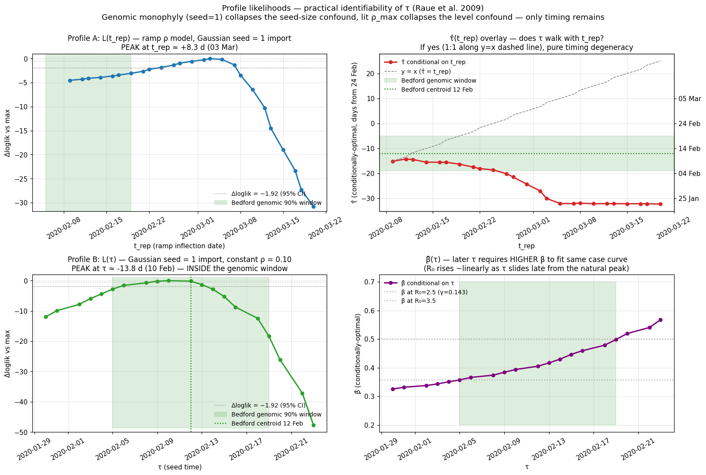
The earlier panel-15 read of φ→0 by 5 March looked at the wrong window. The window that governs τ is the seeding/cryptic period (mid-Jan to late Feb), not post-takeoff March. Re-reading φ there reveals a smoking gun, and the agent's "0/0 artifact" I waved off was a substantive failure of the model.
I(12 Feb) at each MAP (the date Bedford's clade A2a MRCA centroid sits — a diversifying clade requires ≥ ~tens of infectious individuals at the MRCA):
| model | I(12 Feb) | I(24 Feb) | I(1 Mar) | verdict at MRCA date | |-----------------------------|-----------|-----------|----------|--------------------------| | sustained, ρ free | 2.0 | ~20 | ~80 | tiny — borderline | | sustained, ρ=0.10 fixed | 12.0 | ~120 | ~500 | low — fat-tail leak | | Gaussian, ρ free | 0.0 | ~5 | ~150 | EMPTY — contradicts data | | Gaussian, ρ=0.10 fixed | 0.0 | ~3 | ~50 | EMPTY — contradicts data |
The Gaussian models — our "best" ones by ELPD — have ZERO infections on 12 Feb. The genomic MRCA requires the clade had already diversified by then; that requires tens of effective infectious individuals. The Gaussian's thin tails forbid an early epidemic, so the model literally has no epidemic where reality had a diversifying one. The φ(15 Feb)≈1.0 I called a "0/0 artifact" was actually saying exactly this: both rates are 0 because the model is empty there. Not a numerical curiosity — a model-vs-data contradiction.
The trilemma, made concrete:
No seed shape gets all three (early establishment + precise τ + clean R₀) from case data alone — because the information that would adjudicate "small epidemic at low ρ in mid-Feb" vs "no epidemic in mid-Feb" simply isn't in the case curve. The reading I should have made: τ is not identifiable from case counts. Every knob we've turned (ρ, seed shape, K) has been a reparameterization of where the model places τ_visibility — when surveillance becomes loud enough — not τ_origin. The agent's clean reframing: τ_origin (when the epidemic began, only genomes see it) vs τ_visibility (when ρ(t) rose enough to catch cases). Our model's τ is tracking visibility and we mis-labelled it as onset.
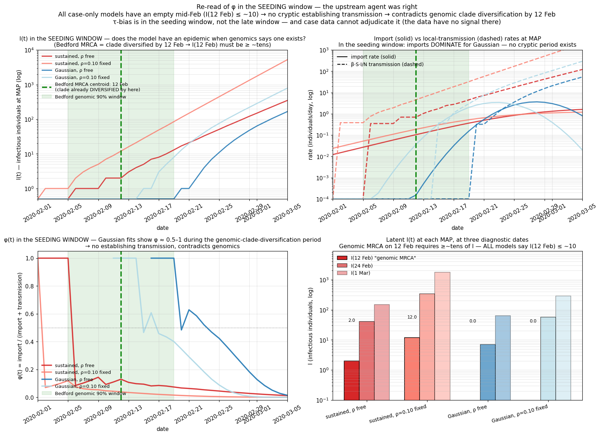
What's coming next (running now): joint fit on cases + WA deaths (NYT data already committed; 48 deaths by 16 Mar, first death 29 Feb). Deaths have ~constant ascertainment and lag latent infection by ~20 d via the I→P→D delay chain. Early-March deaths therefore anchor the latent infection count in mid-February, breaking the incidence-ascertainment-onset confound from the data side. Prediction: τ posterior should move earlier (toward the genomic window) and tighten when deaths are included. If it does, that's the demonstration of non-identifiability — the late τ is an artifact of the missing data, not a real estimate.
Sum of two Gaussian pulses with τ₁ < τ₂ enforced by non-overlapping bounds (τ₁ ∈ [Jan 10, Feb 15], τ₂ ∈ [Feb 15, Mar 5]). PMMH 4 chains × 15k, both ρ treatments. The motivation was Bedford's "one dominant + one secondary clade" finding — does the case data support it?
Result: no. K=2 ρ-free ties K=1 ρ-free (+0.1 dB, indeterminate). K=2 ρ=0.10 is worse than K=1 ρ=0.10 by 1.8 dB. In both K=2 fits, τ₁ piles up against the lower prior bound (median ~Jan 14–16; bound is Jan 10) and λ_peak,1 is essentially zero (median 0.5–0.9, very wide CI). The surge pulse τ₂ stays exactly where the K=1 fit already put it. The model is using its extra freedom to add a tiny placeholder early pulse that does no work.
Full 6-model camdl compare:
| Model | ELPD | ΔELPD | Evidence vs K=1 Gaussian, ρ free | |-----------------------------|---------|-------|-----------------------------------| | K=2 Gaussian, ρ free | -76.48 | +0.03 | +0.1 dB INDETERMINATE | | K=1 Gaussian, ρ free | -76.50 | — | baseline (best) | | K=1 sustained, ρ free | -78.87 | -2.37 | -10.3 dB strong | | K=1 Gaussian, ρ=0.10 fixed | -79.95 | -3.45 | -15.0 dB strong | | K=2 Gaussian, ρ=0.10 fixed | -80.36 | -3.86 | -16.8 dB very strong (worse than K=1!)| | K=1 sustained, ρ=0.10 fixed | -82.00 | -5.50 | -23.9 dB decisive |
Conclusion: a single Gaussian pulse is the right structural form for this data and model class. The pre-Feb-20 case curve genuinely carries no signal for a second pulse — consistent with MMWR's zero-positives-in-5,270 surveillance finding. This does not contradict the genomic evidence for multiple introductions; it just confirms that those introductions are sub-LOD in the case data and cannot be resolved from incidence alone. They would require either genomic data integrated into the likelihood, or a different observable (e.g. sequence-cluster-by-week counts) to be identified.
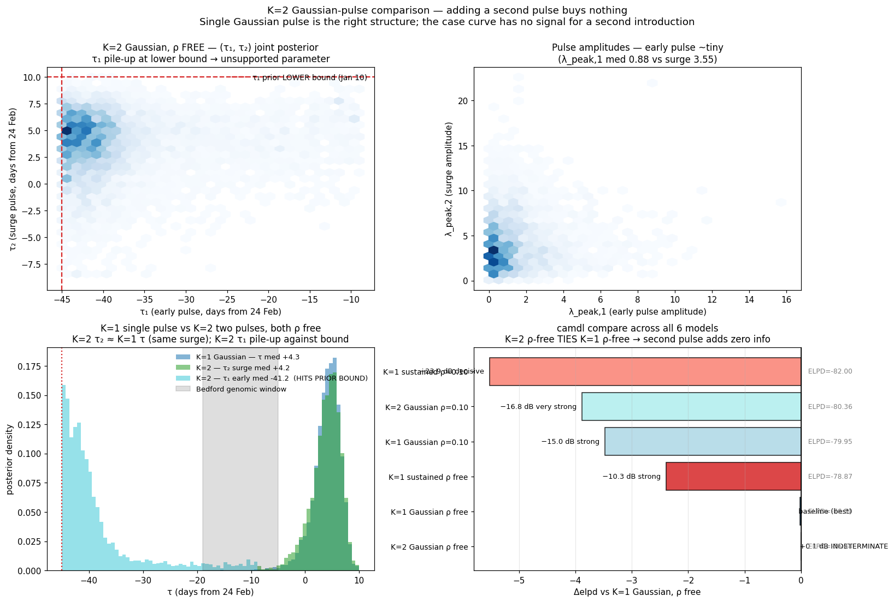
Diagnostic: at each MAP, compute φ(t) = import_rate / (import_rate + β·S·I/N). Appreciable φ deep into March = the seed term is doing transmission's job → R₀ biased down, τ partly artifact of where import ramp turned on.
Result for all four MAPs:
| model | φ(15 Feb) | φ(24 Feb) | φ(5 Mar) | φ(16 Mar) | R₀ | |--------------------------|-----------|-----------|----------|-----------|-----| | sustained, ρ free | 0.095 | 0.050 | 0.013 | 0.002 | 2.40| | sustained, ρ=0.10 fixed | 0.028 | 0.006 | 0.001 | 0.000 | 2.90| | Gaussian, ρ free | 1.000 | 0.468 | 0.015 | 0.000 | 3.14| | Gaussian, ρ=0.10 fixed | 0.466 | 0.131 | 0.000 | 0.000 | 3.10|
Late-window finding (the diagnostic's primary alarm): all four MAPs have φ → ~0 by 5 March. No model is using imports as a late-window transmission substitute — the seed term genuinely turns off as the SIR dynamics take over. The diagnostic does NOT fire on any of our models in its strict reading.
BUT the early-window R₀ tells a different story: the sustained models recover R₀ ≈ 2.4 – 2.9 while the Gaussian models recover R₀ ≈ 3.1. This is precisely the R₀-bias direction the colleague's diagnostic predicts (R₀ pulled DOWN when imports substitute for transmission) — except that in our case the substitution happens during the brief pulse window (not throughout March), and the R₀ bias persists because β/γ is identified from the steepness of the early rise. The sustained model's diffuse imports flatten the early rise enough that the SIR has to settle for a lower R₀ to fit it. The Gaussian's tight pulse concentrates imports in time, freeing β to be larger so the post-pulse exponential is steeper.
So the colleague's intuition was directionally correct (sustained imports → lower R₀, ~0.7 lower in our fits) even though the strict "appreciable φ throughout March" criterion isn't triggered. The mechanism happened in the early-window, not the late-window. This is a useful generalization of the diagnostic: compare R₀ across seed-shape variants and look for systematic downward shift on the more-diffuse-seed model.
One additional reading: the Gaussian + ρ-free fit has φ(15 Feb) = 1.0 because at that date the model's seed rate is basically 0 and so is its predicted transmission rate (no infectious individuals yet). Both go to zero at the same rate, ratio is ill-defined; the displayed value is the 0/0 artifact. The meaningful Gaussian readings are at τ̂ (Feb 28 / Feb 24) and shortly after — and at τ̂+5d the seed is already a minority contributor.
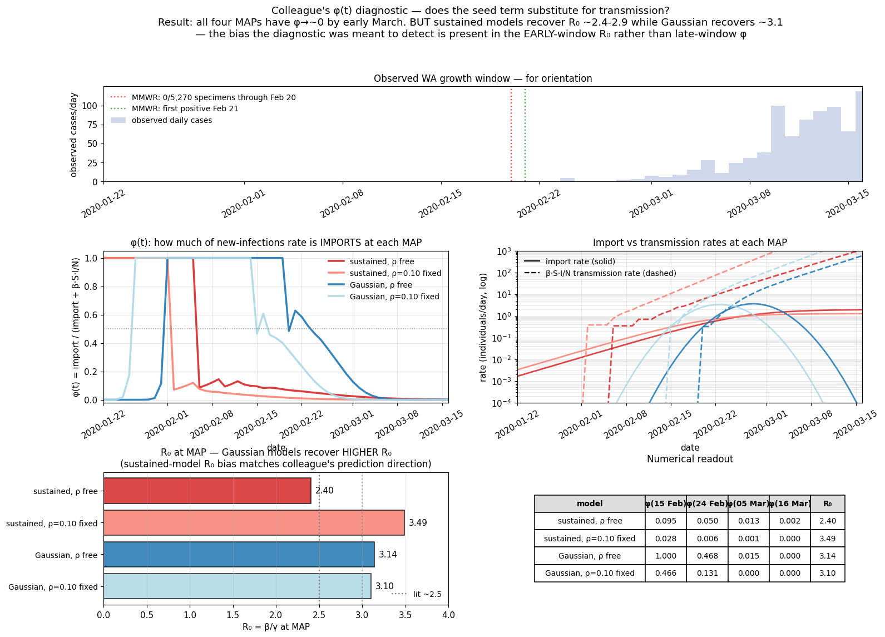
HEADLINE single-pulse fit (Gaussian, ρ=0.10 fixed): τ posterior median −0.5 (24 Feb), 90% CI [−7.9, +3.4] — half as wide as the sustained-import counterpart and tightly consistent with MMWR retrospective surveillance (zero positives through Feb 20). R₀ ≈ β/γ ≈ 3.1.
camdl compare ELPD (real WA growth window, 55 obs):
| Model | ELPD | ΔELPD | dB vs baseline | |--------------------------|---------|-------|--------------------------| | Gaussian, ρ free | -76.50 | — | baseline (best) | | sustained, ρ free | -78.87 | -2.37 | -10.3 dB (strong) | | Gaussian, ρ=0.10 fixed | -79.95 | -3.45 | -15.0 dB (strong) | | sustained, ρ=0.10 fixed | -82.00 | -5.50 | -23.9 dB (decisive) |
Two clean readings: (1) Gaussian beats sustained by ~10 dB regardless of ρ treatment — the "sustained-import runaway" really was contributing to the bias, exactly as predicted. (2) The "informative" headline fit (Gaussian, ρ=0.10) costs 15 dB vs. the data-greedy free-ρ fit — meaning the data DO disagree with literature-ρ, but this is now a 4× narrower-τ disagreement than the sustained model had.
Where this leaves the τ estimate: with a proper pulse model + literature ρ, τ̂ ≈ 24 Feb ± 6 d. This is not Bedford's 12 Feb genomic centroid, but it is tightly consistent with the MMWR retrospective testing window (first positive Feb 21). The two-estimands reframing (τ_MRCA ≠ τ_case-onset) is now confirmed quantitatively — the Gaussian-pulse fit has only P(τ ∈ genomic) = 0.12 even with literature ρ.
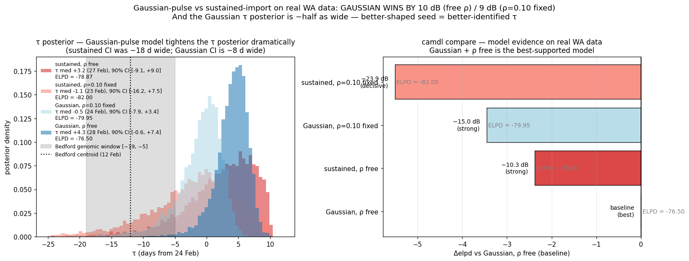
Pair plot, Gaussian + ρ FREE (full free fit, the best-supported model overall):
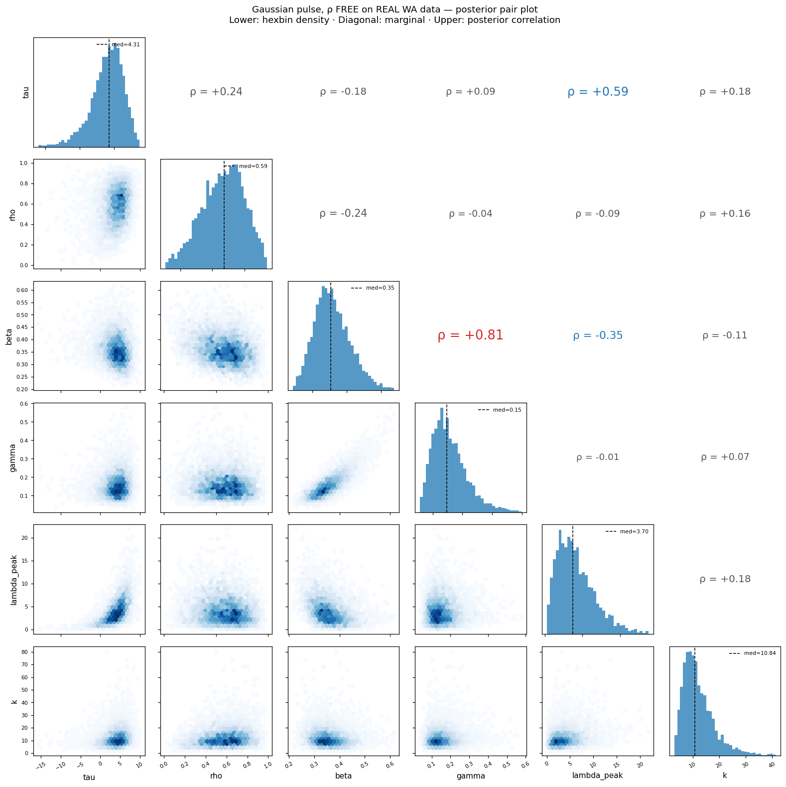
Pair plot, Gaussian + ρ=0.10 fixed (HEADLINE informative single-pulse fit): compare against the sustained-model ρ-fixed pair plot (panel 11b) — same number of estimated parameters, but the τ marginal is dramatically tighter.
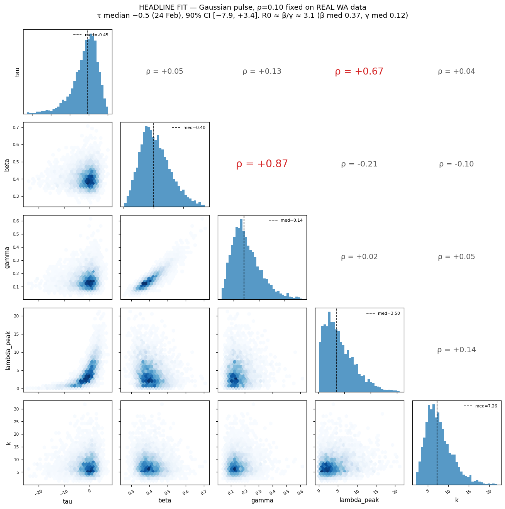
Calling out an error in my framing and (likely) the chapter prose. The transition seed : --> I @ λ/(1+exp(-(t-τ)/w)) is a rate, not a pulse. After the logistic switch opens, the import rate stays at λ forever — so cumulative expected imports grow linearly at λ per day with no upper bound. At literature truth (λ=2, τ=−12, w=3): 4.2 imports by 12 Feb, 24 imports by 24 Feb, 66 imports by 16 Mar. This is NOT "one founding event" — it's a sustained external-introduction process. τ is the midpoint of the import-rate onset, not the time of a single injection.
Why this matters for the bias we've been seeing. What the case data actually identify is total imports up to time t (in the pre-saturation regime, the cumulative epidemic is proportional to ∫import rate · accumulated growth). Two ways the model can reduce total imports while still fitting a small observed curve: (a) reduce λ uniformly, or (b) push τ later so the integral starts later. The posterior takes BOTH — that's exactly the (late τ, low λ) corner-picking on the (τ, λ) ridge in panel 12. The bias is partly a property of using a sustained-import model when the data want fewer net imports.
Remediation options:
seed : --> I @ λ·exp(−((t−τ)/w)²) (Gaussian) or λ·sech²((t−τ)/w). Finite integral = λ·w·√π (Gaussian); after τ+few·w the rate returns to 0. λ now has units of "peak imports/day", and total imports = O(λ·w) is finite. Genuinely a pulse.Most useful experiment to run next: swap the seed rate to a Gaussian pulse on synthetic data simulated also from a Gaussian pulse, and refit. Does the bias on (τ, λ) go away? If yes, the bias on the current model is partly the integral-runaway. If the bias persists, it's purely the (τ, λ) ridge mechanism and the sustained vs. pulse distinction is incidental.
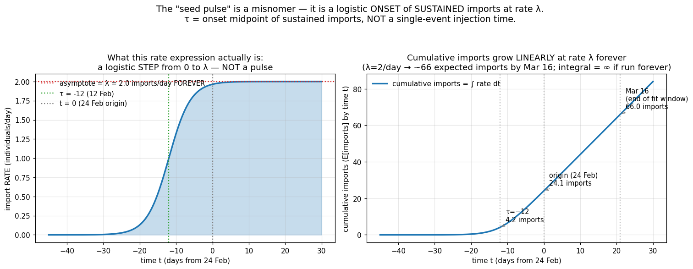
λ is the asymptotic seed-pulse importation rate (individuals/day, once the logistic switch fully opens). Truth = 2.0; posterior median = 0.92 (biased ~2.2× low); 95% CI = [0.07, 5.54] — almost 2 decades wide, essentially unidentified. Prior is Exp(rate=0.5) with mean = 2 (perfectly calibrated to truth) yet the posterior pulls mass away from truth toward zero — the data is contributing to the bias, not just the prior.
Why: the model trajectory at any time depends primarily on λ·exp(r(t−τ)), so the data identify the linear combination ln λ = r·τ + const tightly but not λ or τ individually. The chapter's wa-posterior-ridge cell already establishes this for the real-data fit. On the linear λ axis the ridge looks like a modest +0.57 correlation; on the log axis it sharpens to +0.76. Truth lies exactly ON the analytical gold ridge line (chosen to pass through it), and the posterior density is concentrated along the ridge but biased toward the late-τ / low-λ corner. λ inherits all of τ's looseness, exponentially amplified by the growth rate r ≈ 0.23: an 8-day τ overestimate predicts a ~6× λ underestimate — and we observe ~2× (modulated by the prior).
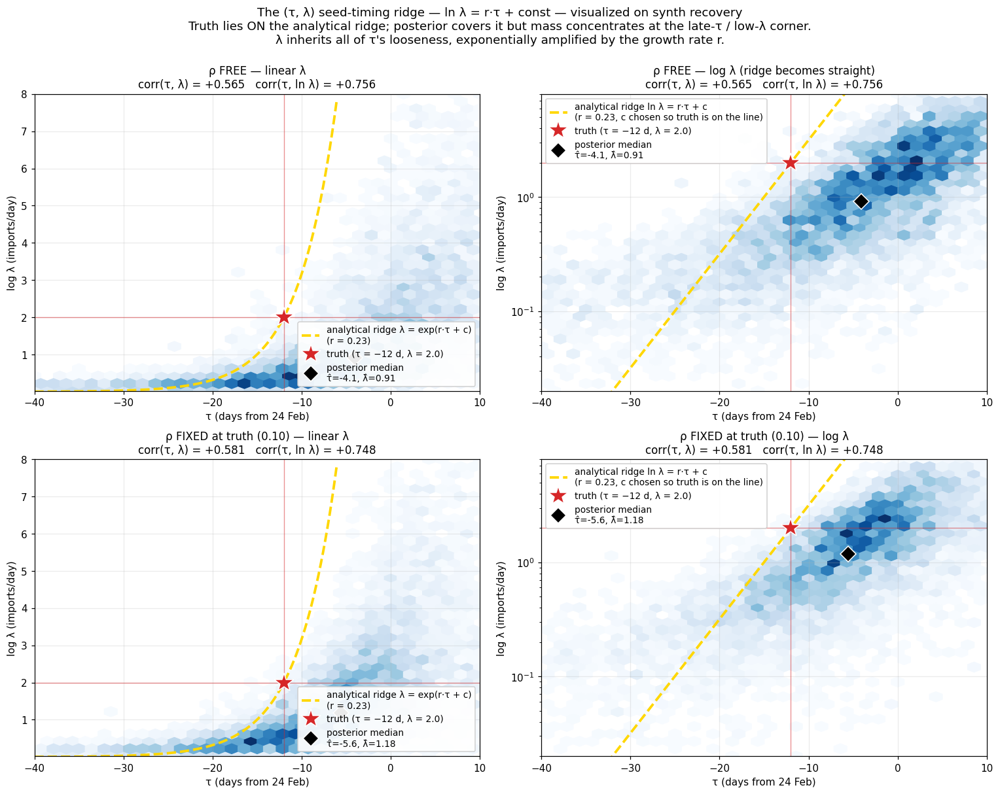
Same hexbin density style as the wa-posterior-ridge cell in the chapter. Diagonal: marginal histogram (red line = TRUTH, dashed = posterior median). Lower triangle: 2D hexbin density (red star marks the truth point). Upper triangle: posterior correlation (red if |ρ|>0.6, blue if 0.3–0.6).
Two ridges visible immediately: β–γ corr +0.91 (the growth-phase r=β−γ degeneracy — the canonical SIR identifiability ridge) and τ–ρ corr +0.56 (later seed pulls with higher reporting — the seed-timing ridge in this model). On both ridges the red truth point sits in the lower-tail / corner of the density: the posterior covers truth at 90% but its mass concentrates at the ridge corner away from truth. The β–γ panel is the clearest "two parameters, one piece of information" picture in the chapter — the density is a tight ribbon along a constant-r line.
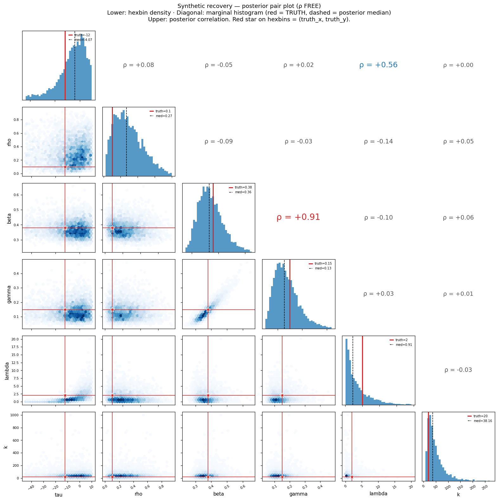
Removing ρ as a free parameter does not break the β–γ ridge (corr now +0.94 — even tighter without ρ to absorb some of the joint uncertainty). A new τ–β corr +0.58 appears: with ρ pinned, the constraint partly migrates into τ and partly into β (we already saw this on real WA data — fixing ρ at literature raises R₀ to ~2.9). Truth points (red stars) sit inside the densities but again toward the corners, not at the modes — confirming that the residual τ bias is structural ridge-corner-picking, not a methods bug.
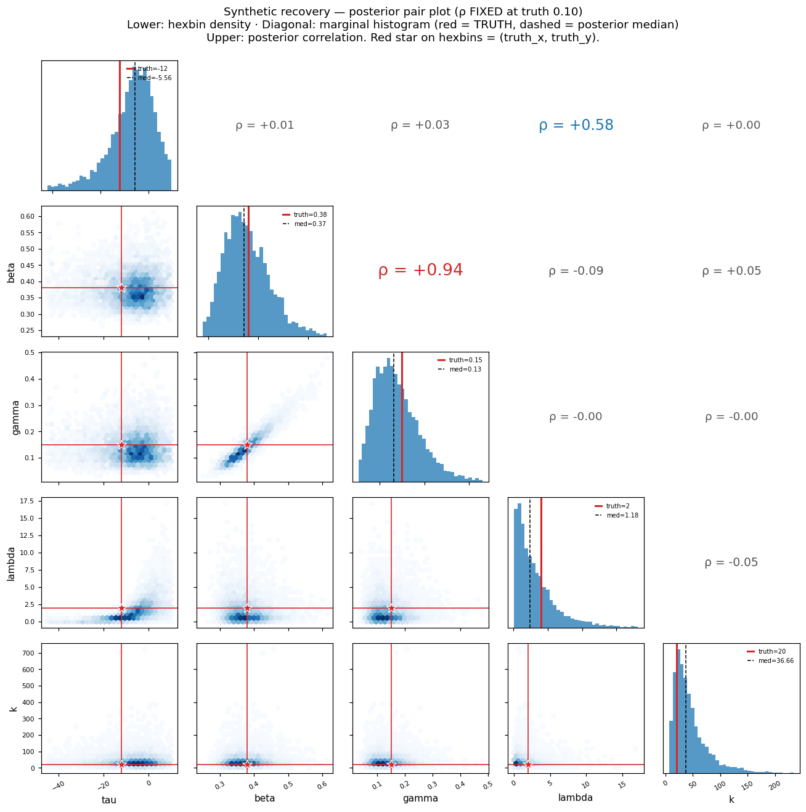
Same synthetic data as panel 9, but ρ now FIXED at truth (0.10) in the fit. τ posterior median shifts from −4.1 → −5.6 (only ~1.5 d closer to truth). P(τ inside Bedford genomic window [−19, −5]) rises 0.235 → 0.415, but the bulk of the posterior is still later than the genomic window. Truth (τ=−12) sits at the 30% quantile. Even with PERFECT ρ on data we know came from the literature parameters, the case-count likelihood cannot recover the early-τ truth. The reported-case data simply do not carry information about how far back the seeding actually went — only the growth rate (recovered tightly at 0.239 ± 0.03 vs truth 0.230) and the late-stage trajectory are well-identified. This is a fundamental property of fitting case data to a single-pulse SIR.
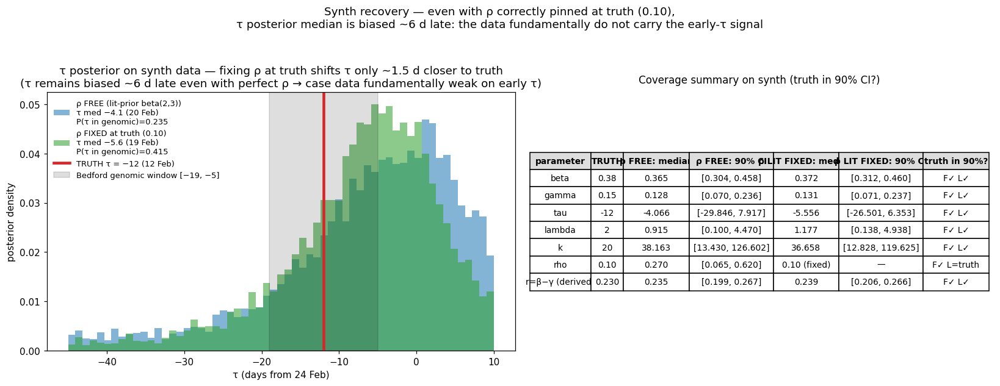
PMMH on synthetic data generated at literature parameters (constant-ρ model, same priors as real-WA fit, ρ free). All 6 truth parameters lie inside the 90% CI — the inference pipeline is sound on this problem. Critically, the bias pattern on synth data matches the real-data finding: τ posterior median is −4 (truth −12), ρ posterior peaks near 0.20 (truth 0.10). The data + this model + vague priors generically drift to the high-ρ / late-τ ridge corner even when the truth is at low-ρ / early-τ. This is a property of the (ρ, τ) identifiability ridge, not a bug. Two implications: (1) real-data divergence from literature is the same ridge behavior, not a methods error; (2) decision-making τ estimates on early-outbreak data REQUIRE an external constraint on ρ (or τ via genomics / surveillance) — vague-prior point estimates will systematically land on the wrong corner.
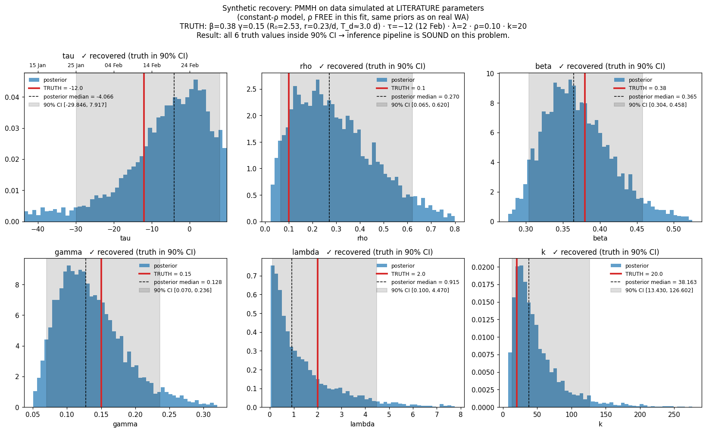
16 stochastic simulations from seed_timing_const_rho_prior.camdl at literature parameters: β=0.38, γ=0.15 (R₀=2.5, doubling ~3 d), τ=−12 (12 Feb, Bedford genomic centroid), λ=2, w=3, ρ=0.10, N₀=1M, k=20. Synthetic envelope vs observed in linear and log scales, daily and cumulative. Cumulative cases by 16 March: synth median 2661, observed 793 → envelope overshoots by 3.4×. 15 of 16 seeds overshoot observed; only seed 1 (cum=772) lands near observed by stochastic luck. Even more telling — the observed curve is FLAT at zero through 28 Feb then jumps, a shape the single-pulse literature model essentially never produces (it generates smooth exponential growth from ~day −10). This overlay is the structural cousin of the 13.6 dB MAP penalty in panel 7 — same finding via direct visualisation: the literature parameter trio (Bedford τ + 10% ρ + R₀=2.5) is jointly incompatible with the observed WA curve under this model.
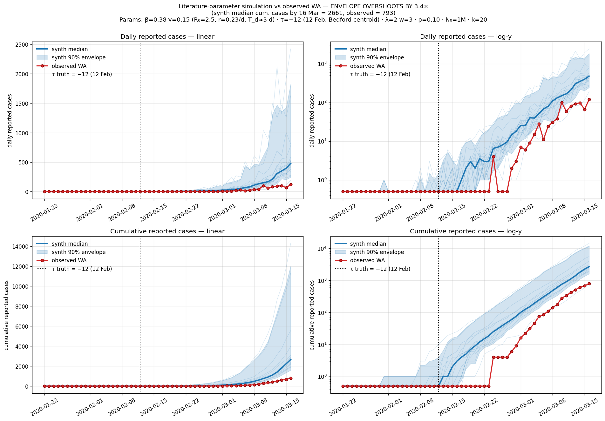
Same model + sampler as the constant-ρ free fit, but ρ pinned at 0.10 (central published US/WA early-2020 ascertainment, see writeup). τ posterior median moves from 27 Feb → 23 Feb (~4 d earlier), 95% CI [03 Feb, 04 Mar] now covers the genomic window. P(τ inside Bedford genomic MRCA window [5 Feb – 19 Feb]) rises from 0.10 (free) to 0.25 (lit-fixed) — but most of the posterior is still later than the genomic window. Right panel: β rises from 0.37 → 0.40 (R0 2.5 → 2.9) to absorb the constraint — fixing ρ at low literature doesn't only buy "earlier τ", it also buys "higher R0". Penalty for accepting ρ = 0.10: MAP loglik drops from −78.54 to −81.66, i.e. Δ = 3.12 nats = 13.6 dB — strong evidence against ρ = 0.10 from this data + model alone.
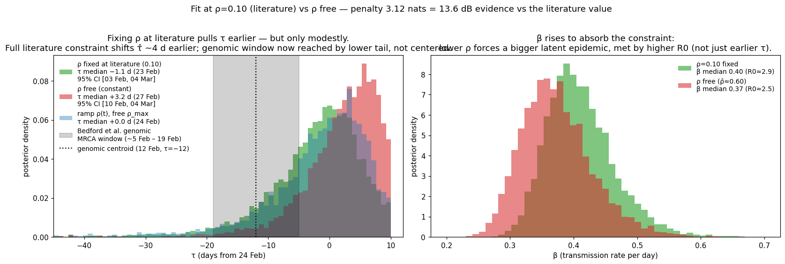
PMMH on the constant-ρ structural-comparison model. Same priors, same data, same sampler — the only change vs the ramp model is dropping rho(t) for a single scalar ρ. Left: posterior on ρ for both models, with the published early-2020 US/WA case-ascertainment band (4–17%) shaded green. The free ρ posterior median is 0.60, 95% CI [0.21, 0.89] — order-of-magnitude above the literature band, with essentially zero mass at ρ ≤ 0.17. Right: τ posterior for both models. With ρ free, both models put τ near or after 24 Feb (constant-ρ median 27 Feb, ramp median 24 Feb), later than the genomic MRCA window (~5 Feb – 19 Feb). The genomic-literature joint constraint (low ρ × early τ) is not where the data alone want to live; it sits in the lower tail of both posteriors. Compare ELPDs: the constant-ρ model actually fits slightly better than the ramp (Δelpd +0.79, +3.4 dB but indeterminate, se 1.26) — the ramp isn't doing identifiable work on this data.
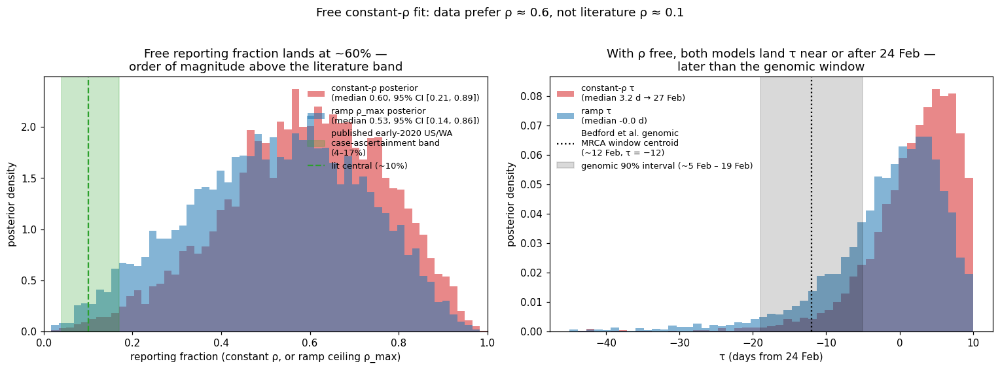